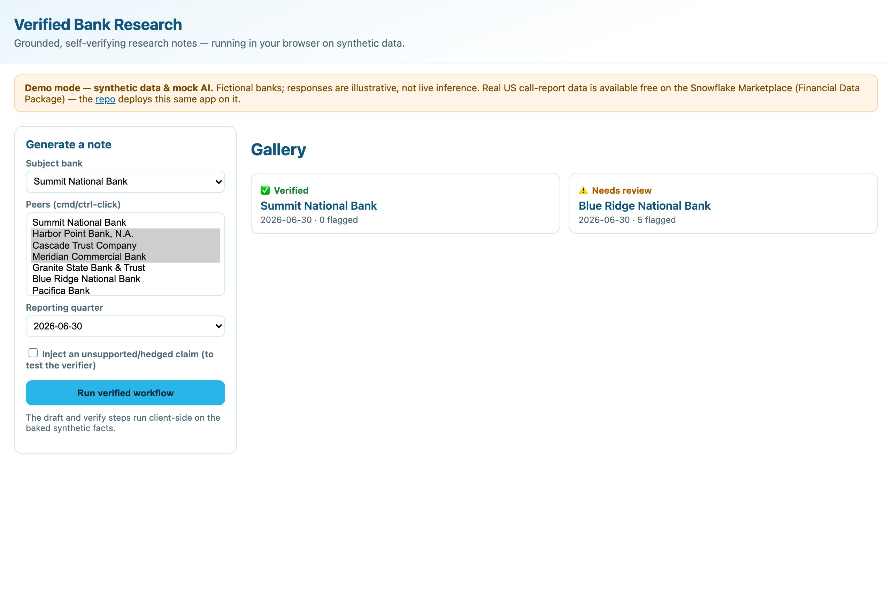
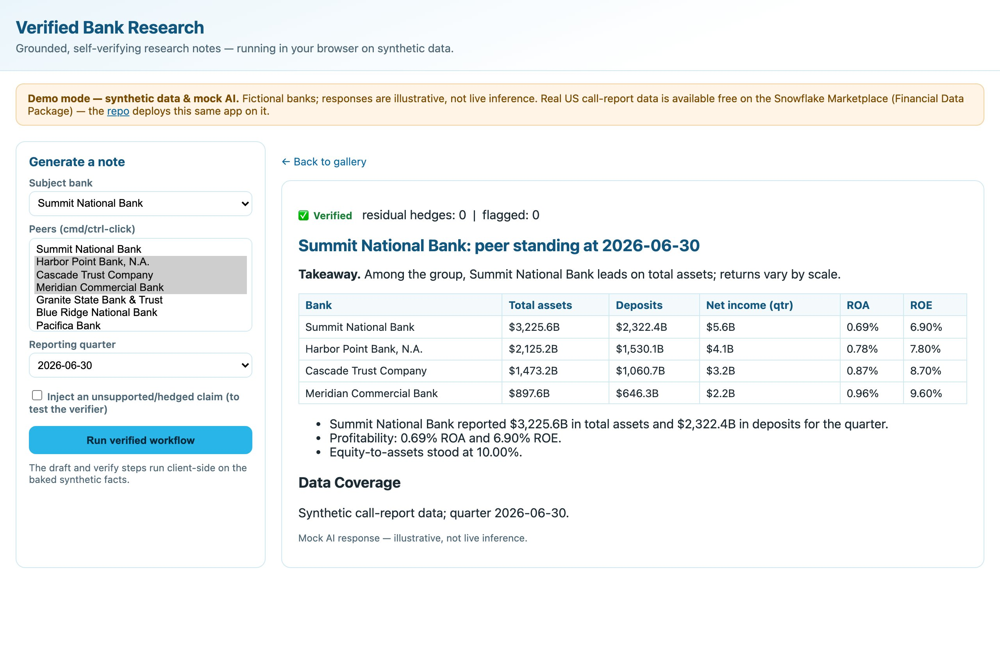
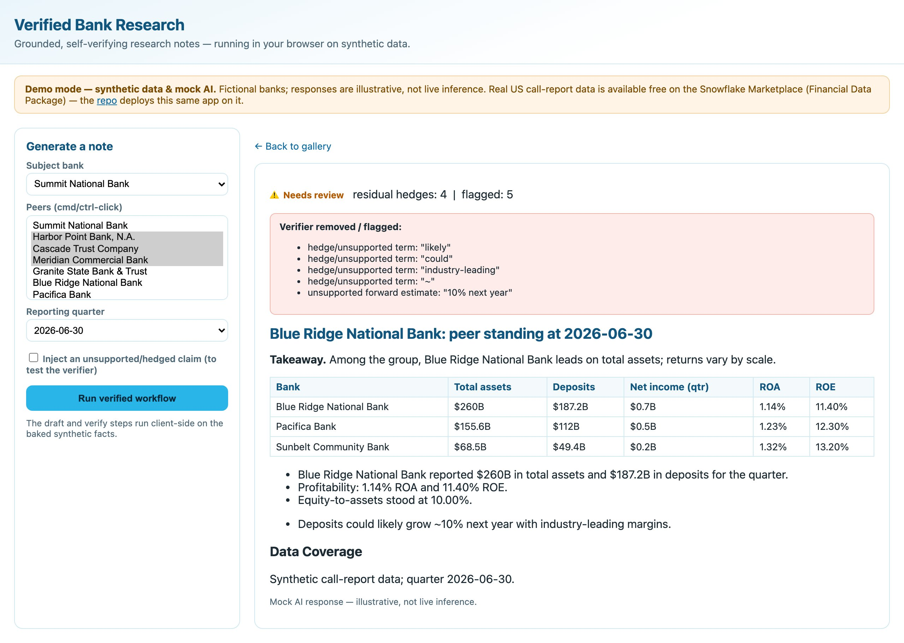

01 / See
A gallery of research notes, each badged Verified or Needs review. Generate one from a subject bank, peers, and a quarter.
SNOW PACK · FINANCIAL SERVICES
A research agent that writes a one-page note on a bank and its peers — where every number is pulled from governed call-report data, and a verifier refuses to ship an unsupported claim.
Synthetic sample data. Mock AI responses are illustrative, not live inference.
Every bank wants an LLM in front of its analysts. The blocker is always the same: can we trust the numbers? This pack shows an agent whose answers are grounded only in governed data, with a verification step that catches anything unsupported — the difference between a toy and something a compliance team will sign off.
A gallery of research notes, each badged Verified or Needs review. Generate one from a subject bank, peers, and a quarter.
Explore in your browser on synthetic data — no account, no install. Or run one SQL script in your own account to try it on synthetic tables.
Mount the free Financial Data Package from the Marketplace, run setup.sql, and the same app runs on real FFIEC/FDIC data. Adapt to your tables with Cortex Code.


